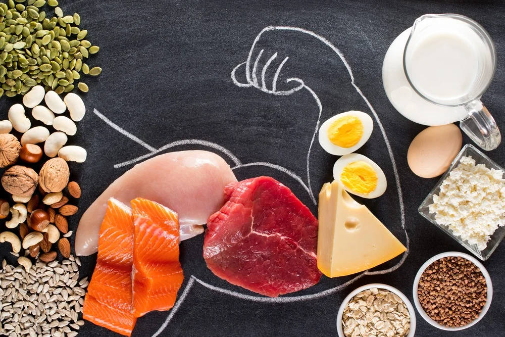
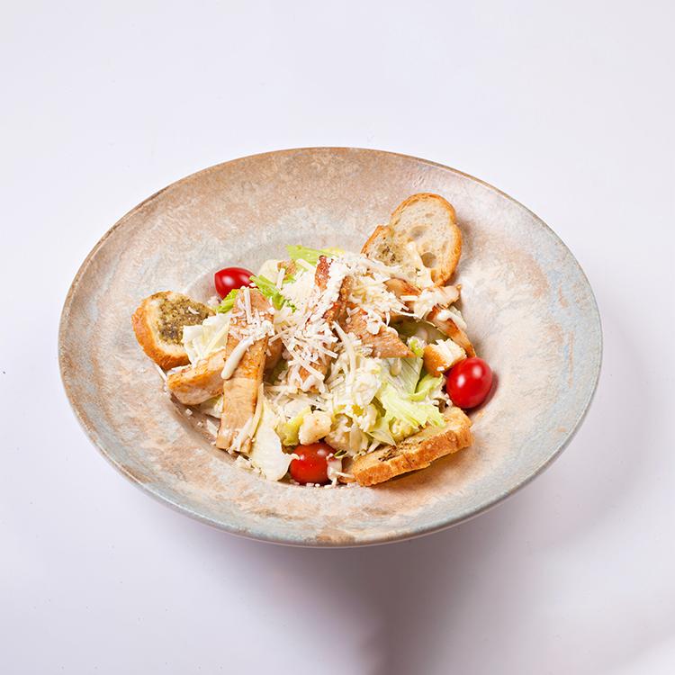

Zülallar
Əzələ İnşası
Toyuq, balıq, yumurta və paxlalılar əzələlərin bərpası üçün vacibdir.

Vitaminlər
Enerji Balansı
Tərəvəz və meyvələr bədənin müqavimətini artırır və metabolizmanı tənzimləyir.
Gündəlik Nümunə Menyu

💧 Su İçməyi Unutma!
Gündə ən az 2-2.5 litr su içmək metabolizmanı 15% daha sürətli işlədir.
🕒 Zamanlama Önəmlidir
Məşqdən 2 saat əvvəl və məşqdən 45 dəqiqə sonra qidalanmağa çalışın.